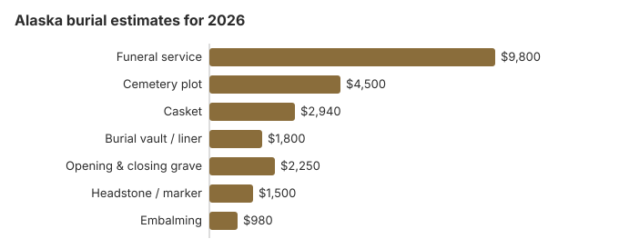

Burial Costs in Alaska (2026)
Alaska burial is expensive on our estimates: $21,790 to $26,290 once the cemetery's charges are counted, led by a $9,800 funeral service and a $4,500 plot. Distance adds its own costs, because many families ship a body to or from a remote community by air. This page covers the burial-transit permit, General Relief Assistance, the permit needed to move a grave later, and the two national cemeteries at Fort Richardson and Sitka.
Alaska Burial Costs, Line by Line
| Charge | Alaska estimate | Low to high |
|---|---|---|
| Funeral service | $9,800 | $7,350 – $12,740 |
| Cemetery plot | $4,500 | $2,250 – $9,000 |
| Casket | $2,940 | $980 – $7,840 |
| Burial vault / liner | $1,800 | $800 – $10,000 |
| Opening & closing grave | $2,250 | $500 – $3,000 |
| Headstone / marker | $1,500 | $500 – $5,000+ |
| Embalming | $980 | $500 – $1,500 |
About the Alaska numbers: they come from our cost model, not a canvass of Alaska funeral homes or cemeteries, so treat them as a yardstick for real quotes and not as a quote or professional advice. The method is in our method with its limits in the disclaimer.
State sources: AS 18.50.260.

With the cemetery's charges in, an Alaska burial comes to $21,790 to $26,290 on our model; the casket and headstone decide where in that range a family lands.
Distance and Timing in Alaska
About 72% of Alaskans are cremated on this site's figures, so burial is the smaller share of the work for Alaska funeral homes. What makes an Alaska burial costly is often distance: a body may travel by air between a village and a hub city, and the burial-transit permit (AS 18.50.250) has to be in hand before burial. Ask for transport charges in writing alongside the price list.
Burial Resources
- Funeral Consumers AllianceNonprofit consumer advocacy for funeral pricing
- Headstone & Monument GuideCosts, types, and buying tips
- Green Burial OptionsEco-friendly and natural alternatives
- Best Online Casket RetailersCaskets bought online often cost less
- Best Burial InsuranceCompare plans to cover burial expenses
Compare Funeral Costs
- Average Funeral Cost in 2026National cost breakdown with real prices
- Cremation vs. Burial Cost ComparisonSide-by-side price comparison to help you decide
- Funeral Cost BreakdownEvery line item explained: know what you're paying for
- Cheapest Funeral OptionsLower-cost alternatives, with typical price ranges
- Direct Cremation: Most Affordable OptionNFDA 2023 median $2,645 with a family-supplied container (latest available)
- How to Compare Funeral PricesStep-by-step guide to getting the best price
Alaska Burial Types
- Green burial: No embalming, biodegradable container, and a natural setting; ask which Alaska cemeteries allow it. Learn about green burial
Cutting an Alaska Burial Bill
Ways an Alaska family can spend less:
- Ask for itemized prices. A package price hides which parts you could drop, and the FTC Funeral Rule lets you buy only the goods and services you want from the funeral home's General Price List.
- Ask about natural sections. Some cemeteries allow burial without embalming or a vault; ask each Alaska cemetery you call whether it does and what it charges.
- Price the cemetery separately. Our model puts the Alaska plot at $4,500 and opening the grave at $2,250, so the cemetery's share can approach the funeral home's; get its prices in writing before you commit.
- Check veterans cemeteries. An eligible veteran can be buried at Fort Richardson or Sitka National Cemetery with no charge for the grave, opening, liner or marker.
Frequently Asked Questions
How much does an Alaska burial cost?
Our Alaska range is $21,790 to $26,290: about $9,800 for the funeral service, $4,500 for the plot, $2,940 for a casket, $1,800 for the vault or liner, $2,250 to open and close the grave, and a headstone from $500 to $5,000.
Does Alaska require a burial vault?
No Alaska statute we found requires one, so the cemetery's own rules decide. We estimate a vault or liner at about $1,800, and a basic liner is normally the least expensive container a cemetery takes.
What Alaska does require is a burial-transit permit before burial (AS 18.50.250). Local rules decide where a body may be buried; in the Municipality of Anchorage, only in an approved cemetery. Get the cemetery's container rule before the funeral home orders a vault.
What is the least expensive Alaska burial?
Direct burial, with no embalming, viewing or service, is usually the cheapest burial on an Alaska General Price List. A casket bought elsewhere must be accepted without a handling fee (FTC Funeral Rule), and an eligible veteran's grave, opening, liner and marker in a national cemetery cost nothing.
Who sets Alaska cemetery prices?
Each cemetery sets its own prices, and the FTC Funeral Rule does not cover cemeteries, so ask each Alaska cemetery for a written sheet listing the plot, the grave opening, its vault rule, any endowment or perpetual care charge, and who may be buried there.
What is the full Alaska burial total?
Added together: $9,800 for the service, $4,500 for the plot, $2,940 for a casket, $1,800 for a vault, $2,250 for the opening and a $500 to $5,000 headstone, or $21,790 to $26,290 before death certificates and other cash advance items.
Can an Alaska burial be green?
Ask each Alaska cemetery whether it will accept a burial with no embalming and no vault in a biodegradable container; practice varies. Our green burial guide lists the questions to raise.
More for Alaska
Alaska's permit for moving a burial
Alaska requires a permit before a body is dug up to move it to another cemetery, or taken out of a permanent vault to go somewhere else. It is issued locally under the State Registrar's instructions, and it also covers reburial or other final disposition and the transport in between. When an official investigation needs the body, the usual court order takes the place of the permit (7 AAC 05.540; checked October 29, 2026).
Many Alaska burials involve shipping a body to or from a remote community, often by air. Moving a burial later can bring a second round of those costs, so families weighing a temporary burial near a hub city should ask what a future move would cost before choosing it.
Alaska burial rules and public help
Funeral homes in Alaska are licensed by the mortuary science program of the Division of Corporations, Business and Professional Licensing (907-465-2250), which can also point you to the office for a cemetery complaint.
No funeral director is needed for an Alaska burial (the Funeral Consumers Alliance does not put Alaska among its nine states), so the family can settle the plot, the grave opening and the accepted container with the cemetery itself. Where filing the death certificate first would cause undue hardship, state regulations may allow the burial-transit permit to issue before that certificate is filed (AS 18.50.260).
Burial waits only for the permit. If the family turns to cremation, Alaska sets no waiting period, but the person with the right to control disposition must authorize it and a permit is required (AS 13.75.020).
General Relief
Alaska's General Relief Assistance can pay a funeral home up to $1,250 for basic services, with the least-cost plot and the grave opening payable as well (7 AAC 47.130). Most of Alaska lies in the Unorganized Borough, with no borough government to ask, so this state program is the usual route. Social Security's one-time $255 goes to an eligible spouse or child and covers little of a $4,500 plot.
Veterans
Fort Richardson National Cemetery and Sitka National Cemetery (both 907-384-7075) and the tribal Metlakatla Veterans Memorial Cemetery (907-886-1121) bury eligible veterans with no charge for the plot or marker, according to the VA National Cemetery Administration.
Alaska burial checklist
- Get the funeral home's General Price List, the cemetery's price sheet and any air transport quote in writing.
- Confirm the burial-transit permit before the burial date.
- If the family cannot pay, ask the Division of Public Assistance which least-cost plot General Relief will approve before buying one.
- For a veteran, call Fort Richardson about eligibility first.
- Report a misleading funeral home to 907-465-2250.